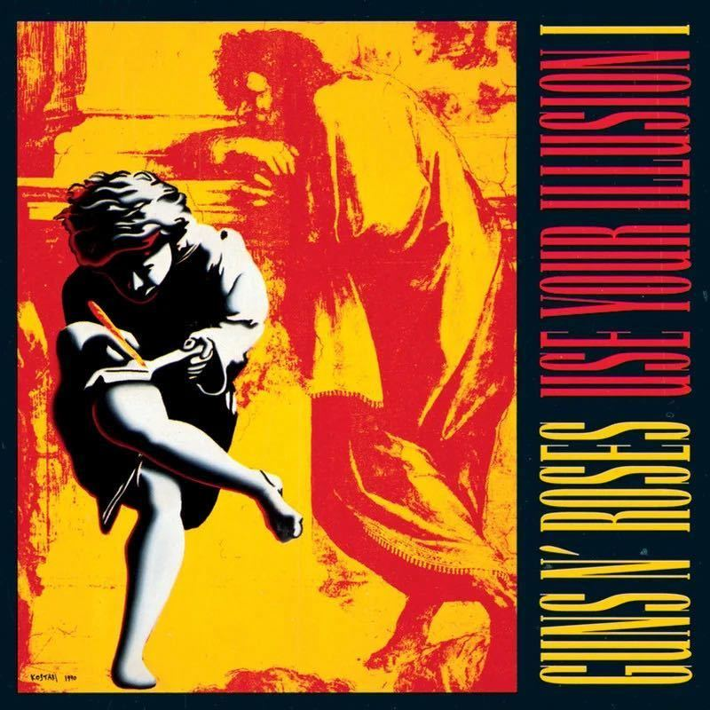

循环顺序 i → j → k，直接翻译矩阵乘法定义：
C[i][j] = Σ A[i][k] × B[k][j]
将循环顺序从 i-j-k 改为 i → k → j，内层循环沿 j 方向（行方向）遍历 B 矩阵。
① B 按行访问：相邻元素仅差 8 字节，落在同一条 64B 缓存行内，一次加载服务 8 次访问。
② aik 标量复用：提取为局部变量后保留在寄存器中，内层循环省去 A 的索引开销。
768×768 矩阵有 4.7MB，但 CPU 的高速缓存装不下。切成 64×64 小块，每次只算一小块，数据一直在高速缓存里不搬走。
CPU 内部有三级缓存，越靠近 CPU 越快但越小：
• L1 缓存：32-48KB，访问约 4 个时钟周期，最快
• L2 缓存：256KB-1MB，访问约 12 个周期
• 主内存（RAM）：几 GB，访问约 200 个周期，比 L1 慢 50 倍
64×64 个 double = 32KB，刚好塞进 L1。算这一小块时所有数据都在"快车道"上，不用去"慢车道"取。这就是为什么分块后速度能快 10 倍。
正常循环：算 1 个 → 判断"还要继续吗" → 算 1 个 → 判断 → ...
4 路展开：一口气算 4 个 → 判断 → 算 4 个 → ...
选 4 的三个原因：
① CPU 的浮点乘法器通常有 2-4 个，4 路刚好打满，再多了也不会更快
② 4 个 double = 32 字节，对齐友好，CPU 读取效率最高
③ 展开太多（比如 16 路）代码体积膨胀，反而挤占指令缓存，得不偿失
实测 2 路、4 路、8 路，4 路是性价比最高的甜点。
上一步虽然分块了，但每次算 C 的一个元素还是要"从内存读出来→加上去→写回内存"，反复折腾。
这一步：用 16 个局部变量代替 C 矩阵，全程在 CPU 寄存器里算，768 轮循环结束后才写回一次。
768 次循环 × 16 个元素 × 读+写 = 24576 次内存操作 → 16 次
B 的一行 4 个数被 A 的 4 行共享，读一次用 4 遍
BLAS（Basic Linear Algebra Subprograms）是线性代数运算的工业标准接口。Apple Accelerate 是苹果官方的高性能数学库，内部使用 AMX 矩阵协处理器 + 多线程 + SIMD 向量化。
它快是因为用了硬件专用指令，而我们的代码是纯 C 软件实现。差距 18× 说明：硬件加速 vs 通用 CPU 的天花板差距就是这么大。
汇报展示
负责项目讲解、现场演示与答辩

HTML 生成设计
matrix-toolbox.html 网页计算器设计与实现
矩阵乘法优化设计
四种乘法实现代码与介绍文档撰写
不依赖 SIMD、线程 API 或第三方库，纯 C99 即可达到 18× 加速。
分块 + 微内核的本质是让数据驻留在 L1 缓存，减少 DRAM 访问。
同一套代码既可用于课程学习，也达到了 29.9 GFLOP/s 的生产级性能。